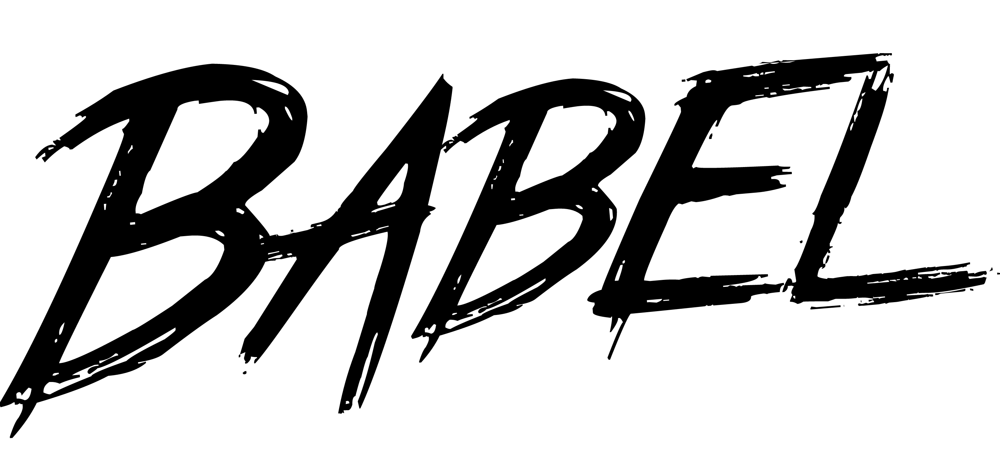

Tower of Babel.js
@trevorgerhardt / @conveyal
Originally wanted to just talk about ES6 features, but a few months went by Babel became a big deal, Alex told me I had the entire evening to myself, so I expanded the scope a bit.
- A bit of history
- State of JavaScript
- ES6 & the future
What this talk is about
Brief history of JavaScript
mostly
~3000 B.C.
Story from Genesis meant to explain the origin of languages.
A united civilization that built a towering city.
God thought what they were building was arrogant and decided to punish their hubris.
So he scattered them around the world and changed their languages so they couldn't understand each other or accomplish anything.
What an asshole.
1969 🚀
We put a man on the moon. Check out that hubris!
1995 JavaScript created in 7 days
And God saw that it was good
by Brendan Eich
JavaScript is 20 years old! Young?
Named for marketing purposes. So, so stupid.
2000 ECMAScript3 finalized
regex, try/catch
2002 JSLint
7 years without syntax error checking
Could finally check for errors outside of the browser...wow. The way to tell before was to just make sure the functionality worked in the browser...what??
2007 Atwood's Law
Any application that can be written in JavaScript, will eventually be written in JavaScript. — http://blog.codinghorror.com/the-principle-of-least-power/
Precient quote — In July 2007 IE7 was the dominant browser with 67% of the market share
2008 Chrome/V8
Along with the V8 engine. JIT compilation, run time optimization, garbage collection. Debug tools. Most importantly, smart people dedicated to making JavaScript fast.
The earliest JavaScript I wrote that is still in production somewhere (Shoutout to YDOP/GameJolt)

2009
2009 CoffeeScript
Compile to JS
Ruby inspired sugar. Popularized the notion that you don't have to write in JavaScript, just run it. Inspired a lot of ES6 changes.
2010 ES5 Finalized
"use strict", getters/setters, JSON
ES4 never happened for political reasons. A full decade between standardized versions. We're moving at breakneck speed now!
This brought "use strict", getters/setters and JSON
2011 Node Webkit & PhoneGap
The final frontiers: desktop & mobile
JavaScript for desktop applications. JavaScript top to bottom.
2012 Esprima
Syntax tree generation
Code validation, transformation, preprocessing made much much easier
2013 ESNext & Traceur
Use ES6 features today!
Originally sponsored by Square who had a great web development team it took planned ECMAScript standardized features and compiled it into browser compatible code
2014 io.js schism
The great schism! Another biblical term. Go to NovaNode next month or find more about it online. There are a lot of reasons why this happened but the major one was falling way behind on V8 updates which contained native ES6 features.
State of JavaScript
the good, the bad, and the ugly
We've come a long way since 1995
APPS
Background on my work - highlights of CarFreeAtoZ/Modeify - NodeJS backed single page web app - Component based front end framework (does not currently use Babel)
FUN
Also work on viz tools, I write a lot of JavaScript (D3, Leaflet, Crossfilter, etc.)
Wiring components together.
Libraries, templates, event handlers, APIs, databases. This is the fun stuff. Solving new problems in novel ways.
NOT FUN
Form building, formatting data into tables, creating generic API endpoints for new data models. Reinventing the wheel.
Modern Development
a balance between sprinting on a treadmill and thinking the rest of the world is never going to catch up
Sometimes it feels like we're recreating the wheel all of the time
~139,000 NPM Packages
Past evented servers & dynamic web pages
Atom, Bower, Browserify, Esprima/Espree, ESLint, Grunt/Gulp, Ionic, JSDoc, NPM, React Native, Yeoman
We have legitimate applications, package managers, documentation generators, syntax tree parsers, pluggable code validators, and complex build systems. We use it everywhere. A huge ecosystem of libraries, modules, and tools for inifinite applications.
308 (known) compile-to-js langs
AtScript, ClojureScript, CoffeeScript, Dart, FlowType, TypeScript
Reusability and sharing isn't just about working code, it's about understanding
Applying Technical Credits Broadly
Decisions bring baggage
The Future: ES6
A language people want to use
Don't expect any big changes. Pretty safe to assume it's stable at this point. Stop calling it ES2015, that's just stupid. A lot of the noticeable changes are syntactic sugar. It also standardizes common practices and alleviaates common painpoints.
Quick Overview
Classes
class Person extends Model {
constructor (attributes) {
super (attributes)
},
log() {
super.print()
}
}
Inheritance. Parent method calling. Constructors. Most importantly a standard way of doing it.
Don't listen to anyone that tells you otherwise they're being pedantic.
Don't overuse it, the factory Design Patterns is still helpful, but use the language, work with it, not against it.
let/const and block scoping
for (let i = 0; i < 10; i++) {
const j = i // valid
j = i + 1 // TypeError: Assignment to constant variable
}
console.log(i, j) // both undefined
When converting code to ES6 an easy way to tell code that's been converted is the lack of `var`. There's no need for it anymore.
Currently must be used in strict mode in V8.
Templates
const hours = 1000 * 1000 * 1000
`We could have saved ${hours} hours of development time!`
Seriously tho, how many strings have you concatenated?
Arrow Functions
this.itineraries.forEach((i) => {
if (i.trips.length > 0)
this.multiLeg.push(v)
})
Expression and statement bodies, lexical this.
Destructuring
let [one, , three] = [1, 2, 3]
let { good: g, bad: b, ugly: u} = findResults()
Native Modules
import bcrypt from 'bcryptjs'
export function babelify() {
...
}
Generators, Promises, Map, Set, Symbols, ...Rest/Spread, and more

With babel this is all available right now
But so what?
You probably already knew you could use Babel to write ES6 features. But it doesn't stop there.
Writing code for 2020 and Beyond
With Babel:
- Modern features of ES6
- Interoperable compiled code for legacy systems
- Community embracing the future